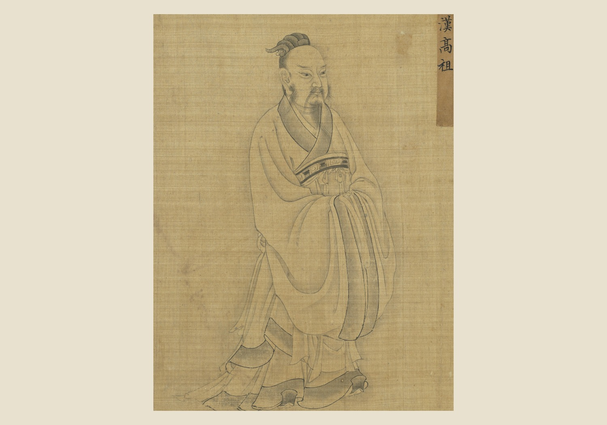
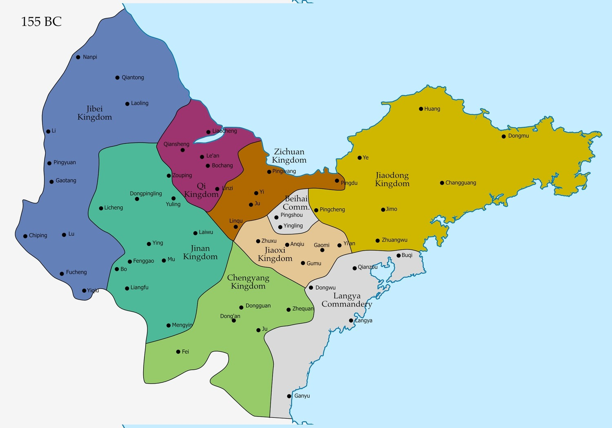
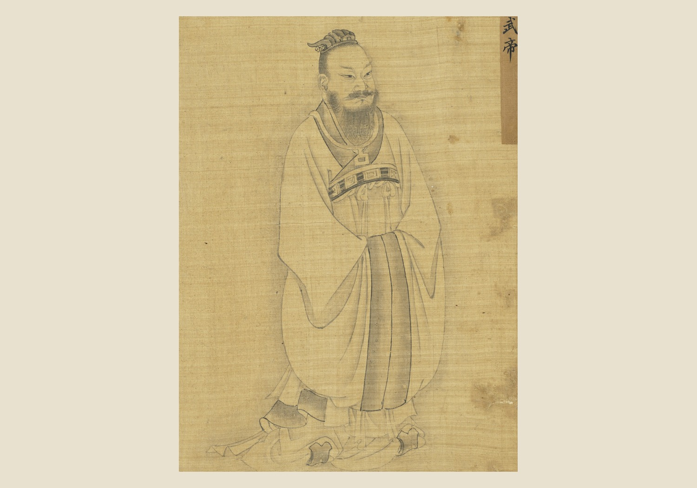
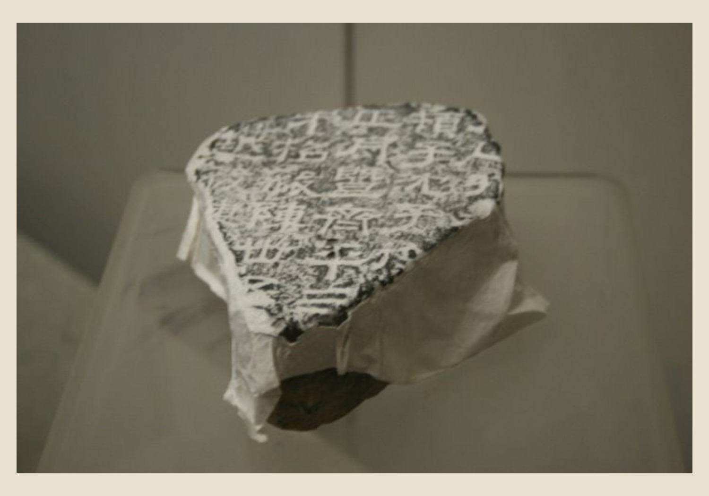

Questions and Problems
Mechanisms and Consequences
The four questions of Lecture 2 converge on a single formulation that the textbook states outright and that is one of the…
Q3 — evidence, mechanism, and consequence

Visual evidence for Q3
The Han founding was an act of selective inheritance. Emperor Gao kept the Qin administrative machine — the appointed, accountable, merit-graded bureaucracy and the…
What mechanism best explains this outcome? State your answer to Q3 as a causal claim.
Q4 — evidence, mechanism, and consequence

Visual evidence for Q4
The Han never solved the Xiongnu problem; they managed it through an oscillation between appeasement and war, neither of which fully worked. Heqin appeasement…
What mechanism best explains this outcome? State your answer to Q4 as a causal claim.
Q5 — evidence, mechanism, and consequence

Visual evidence for Q5
Emperor Wu's wars against the Xiongnu drove an economic revolution. To fund them, he transformed the state from a collector of taxes into a…
What mechanism best explains this outcome? State your answer to Q5 as a causal claim.
Q6 — evidence, mechanism, and consequence

Visual evidence for Q6
Emperor Wu transformed Confucianism from one school among many into the official ideology of the state and the basis for selecting its officials. Dong…
What mechanism best explains this outcome? State your answer to Q6 as a causal claim.
The open question for students: the Han is celebrated for adopting Confucianism over Legalism. But Emperor Wu enforced Confucian orthodoxy using Li Si's Legalist…
Han Society, Thought, and the Southern Reach — the next stage of the course narrative.
→ / Space: Next | ←: Previous | S: Notes | F: Fullscreen | O: Overview | ESC: Close popup